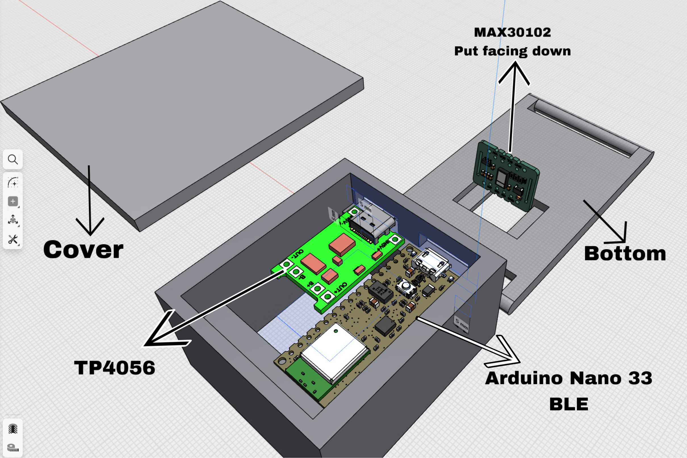
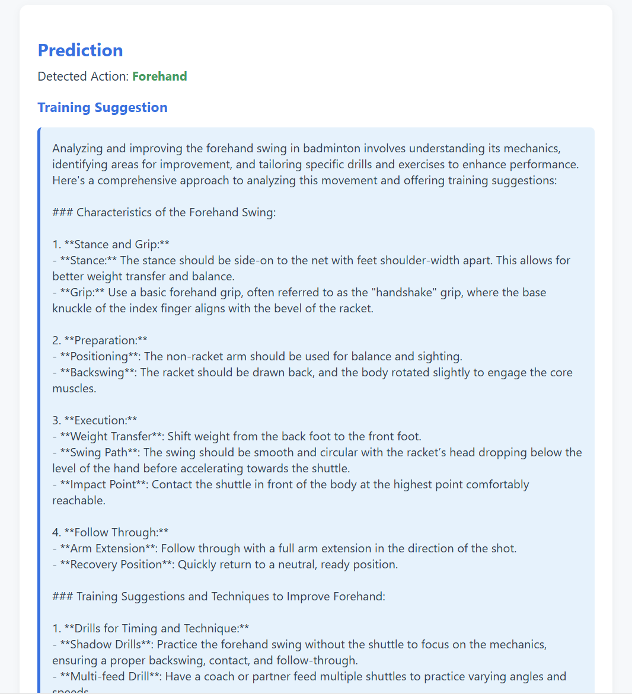

Hardware
The device pairs an Arduino Nano 33 BLE with a nine-axis IMU and a MAX30102 heart-rate and SpO2 sensor. Attitude data is fused on board with a complementary filter and streamed over Bluetooth to a laptop. The enclosure is 3D-printed and the whole unit weighs about thirty grams.

Recognition and feedback
A support-vector machine classifies the incoming motion stream into four stroke types, reaching 88.95% accuracy with a macro F1 of 0.90. The recognised stroke is sent to the GPT-4o API, which returns coach-style feedback, and a small Flask web app presents the result.
